中枢神经系统药物¶
各论药物的考研重点
1．镇静催眠药、抗癫痫药、抗精神病药、抗抑郁药、镇痛药的分类及代表药 【选择题】
2．苯二氮䓬类药物、巴比妥类药物的理化性质、构效关系 【选择题、简答题】
3．地西泮、苯妥英钠、卡马西平的结构、理化性质、应用、代谢 【选择题 / 简答题】
4．普洛加胺的结构、作为前药的意义 【简答题】
5．吩噻嗪类药物的构效关系 【简答题】
6．氯丙嗪的优势构象、2 位有取代基活性强的原因 【简答题】
7．氯丙嗪、吗啡的结构、命名、理化性质、应用、代谢 【选择题 / 简答题】
8．吗啡类药物的构效关系、共同的结构特征 【选择题 / 简答题】
9．左旋多巴与卡比多巴合用的基础 【简答题】
镇静催眠药¶
分类
- 镇静催眠药
- 苯二氮䓬类：地西泮、奥沙西泮、硝西泮、三唑仑、艾司唑仑等（西泮+唑仑）
- 非苯二氮䓬类
- 非苯二氮䓬类GABAₐ受体激动剂：佐匹克隆
- 巴比妥类
- (1) 长时效：巴比妥/苯巴比妥
- (2) 中时效：异戊巴比妥
- (3) 短时效：司可巴比妥
- (4) 超短时效：硫喷妥钠
- 其他类：褪黑素
苯二氮卓类¶
1.结构特征： 具有苯环和七元亚胺内酰胺环合并的苯二氮卓类母核，其中1，4-苯二氮卓类的催眠镇静作用最强，临床上时 镇静催眠、抗焦虑 的首选药物,同时也有抗惊厥作用，在临床上也可以用作抗癫痫药
2.理化性质
1，2位的酰胺键和4，5位的亚胺键在酸性条件下容易发生水解开环反应，4，5位开环是可逆反应，当7位和1，2位上有强吸电子基团时，4，5位特别容易重新环合，所以硝西泮、氟硝西泮口服后在胃酸作用下4，5位水解开环，开环化合物进入弱碱性肠道，又闭合形成原药。因此，4，5位间开环不影响生物利用度
3.作用机制与药理作用 苯二氮卓类药物作用机制与GABA（γ-氨基丁酸）神经递质有关，GABA与受体结合时，会使氯离子通道打开，氯离子内流，神经细胞超极化而产生中枢抑制作用
苯二氮卓类药物占据苯二氮卓受体时，形成苯二氮卓-氯离子通道大分子复合物，增加氯离子通道开放频率，增加受体与GABA的亲和力，增加了GABA的作用，从而产生 镇静、催眠、抗焦虑、抗惊厥、中枢性肌松 等药理作用，因此，苯二氮卓被称为GABAa受体激动剂
graph LR
A[镇静催眠药] -->|小剂量| B[镇静]
B -->|中剂量| C[催眠]
C -->|大剂量| D[麻醉、抗惊厥]
4.构效关系
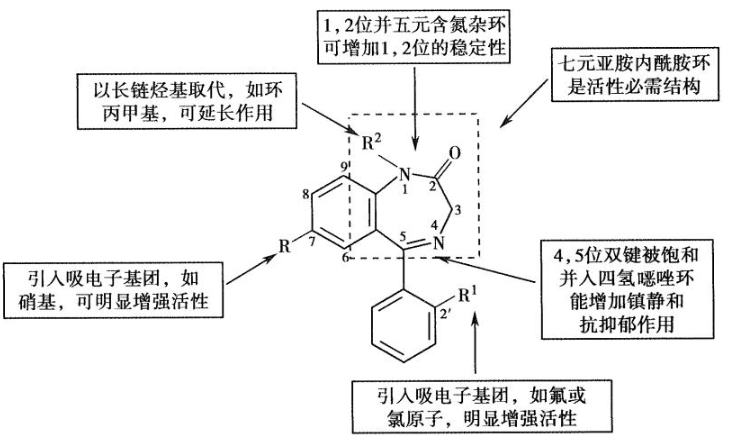
在苯二氮草类的1,2位，并上五元含氮杂环如咪唑和三唑环，得到后缀为唑仑 在4,5位并入四氢噁唑环，得到的药物命名仍以唑仑为后缀题目
1.为什么唑仑类药物比西泮类药物作用强 【简答题】（这种并环结构可以使药物的代谢稳定增加，提高了药物与受体的亲和力，镇静催眠和抗焦虑作用明显增强） 2.含有三氮唑结构的药物有哪些 【选择题】（三唑仑、溴替唑仑、艾司唑仑、阿普唑仑）
5.药物的体内代谢 主要有去 \(N-\) 甲基、C-3位上羟基化、苯环酚羟基化、氮氧化合物还原、1,2位开环等
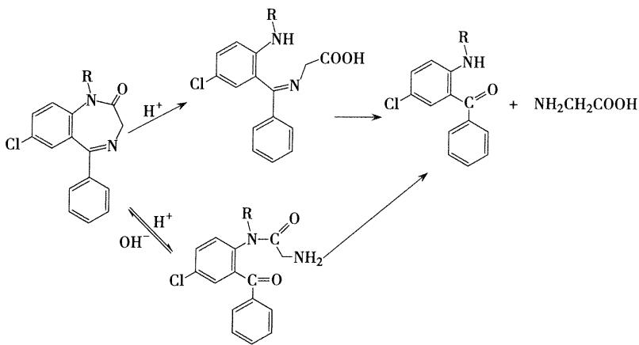
6.重点药物-地西泮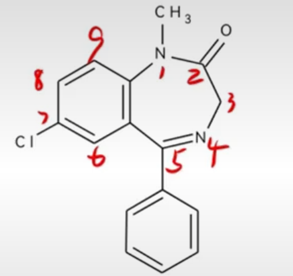
- 地西泮 - 1.化学名： 1-甲基-5-苯基-7-氯-1,3-二氢-2H-1,4-苯并二氮杂草-2-酮 - 2.理化性质： 水解开环 加入碘化铋溶液产生橙红色沉淀（生物碱反应） - 3.药理作用 - 与中枢苯二氮卓受体结合发挥安定、镇静催眠、肌肉松弛和抗惊厥作用，临床上主要用于治疗神经官能症 - 4.体内代谢 - 主要在肝脏代谢，代谢途径为N-1位去甲基，C-3位的氧化，代谢产物仍有活性。形成的3-羟基化的代谢产物以与葡糖醛酸结合的形式排出体外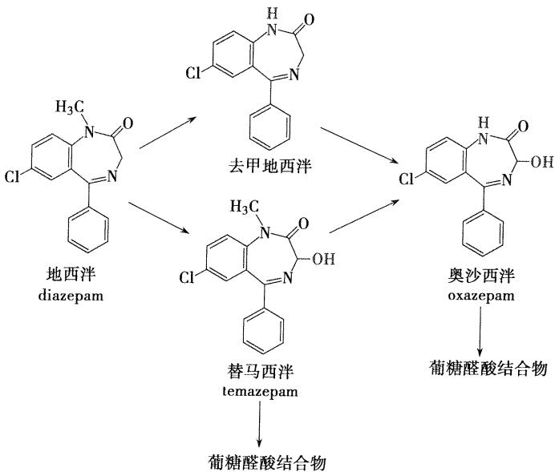
（替马西泮与奥沙西泮的催眠作用较弱，副作用小，半衰期短，适宜于老年人和肝肾功能不良者使用） - 5.地西泮的合成 【简答题考点】 从3-苯-5-氯苯并 \([\mathrm{c}]\) 异噁唑在甲苯中用硫酸二甲酯在氮上甲基化，再用铁粉在酸性条件下还原，得2-甲氨基-5-氯-二苯甲酮。与氯乙酰氯酰化后，生成2-( \(N\) -甲基-氯乙酰氨基)-5-氯二苯甲酮，与盐酸乌洛托品作用，得本品。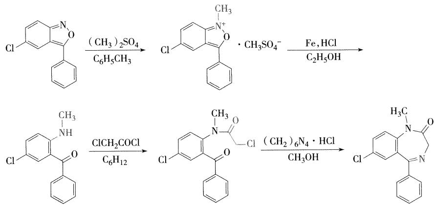
非苯二氮卓类¶
- 1.非苯二氮卓类GABAa受体激动剂
- 咪唑并吡啶类
- 代表药物：唑吡坦
- 主要用于失眠症的短期治疗
- 选择性作用于苯二氮卓受体的一部分，以增加GABA的传递，调节氯离子通道，表现镇静催眠作用
- 高度选择性，选择性和苯二氮卓w1受体亚型结合，对外周苯二氮卓受体亚型无亲和力，而苯二氮卓类药物无此选择性
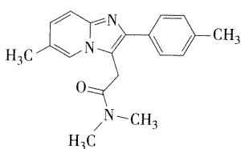
- 代表药物：唑吡坦
- 吡咯烷酮类
- 代表药物：佐匹克隆（第三代催眠药）
- w1受体亚型选择性激动剂，提高睡眠质量比苯二氮卓类更理想，无成瘾性和耐受性
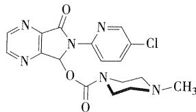
- w1受体亚型选择性激动剂，提高睡眠质量比苯二氮卓类更理想，无成瘾性和耐受性
- 代表药物：佐匹克隆（第三代催眠药）
- 吡唑并嘧啶类
- 代表药物：扎来普隆
- 苯二氮卓w1受体完全激动剂，副作用小，无精神依赖，镇静、抗焦虑、抗惊厥和抗癫痫，还可以用作肌肉、骨骼肌松弛剂
- 代表药物：扎来普隆
- 咪唑并吡啶类
- 2.巴比妥类
- 结构特征
- 巴比妥类药物具有共同结构特征，为5，5-二取代基的环丙二酰脲类
- 作用特点
- 治疗指数较低，容易产生耐受性和依赖性，且毒副作用多，逐渐被其他药物代替，目前临床主要用于抗惊厥、抗癫痫和麻醉及麻醉前给药
- 结构特征
- 3.其他类
- 内源性促睡眠物质，松果体主要激素是褪黑素
抗癫痫药¶
- 发病机制：大脑局部神经元兴奋性过高，反复发生阵发性放电而引起的脑功能异常
- 抗癫痫药作用： 防止或减轻中枢病灶神经元的过度放电 提高正常脑组织的兴奋阈从而减弱来自病灶的兴奋扩散 通过调节GABA系统，预防和控制癫痫发作
酰脲类¶
-
- 巴比妥类
- 结构特征：5，5-二取代的环丙二酰脲
- 分类与代表药物：
- 长效（4-12小时）：苯巴比妥
- 中效（2-8小时）：异戊巴比妥
- 短效（1-4小时）：司可巴比妥
- 超短效（0.5-1小时）：硫喷妥钠
- 理化性质：
- 酸性：
- 5,5-二取代基的巴比妥类药物具有内酰胺-内酰亚胺互变异构，形成烯醇型呈现**弱酸性**，可溶于氢氧化钠和碳酸钠溶液中，生成钠盐，在碳酸氢钠中不溶。巴比妥酸的酸性（ \(\mathrm{pK}_{\mathrm{a}} = 4.12\) ）弱于碳酸，其钠盐不稳定，容易吸收空气中的二氧化碳 而析出巴比妥类沉淀。 【选择题考点】
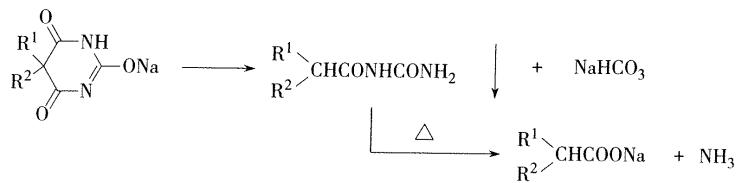
- 5,5-二取代基的巴比妥类药物具有内酰胺-内酰亚胺互变异构，形成烯醇型呈现**弱酸性**，可溶于氢氧化钠和碳酸钠溶液中，生成钠盐，在碳酸氢钠中不溶。巴比妥酸的酸性（ \(\mathrm{pK}_{\mathrm{a}} = 4.12\) ）弱于碳酸，其钠盐不稳定，容易吸收空气中的二氧化碳 而析出巴比妥类沉淀。 【选择题考点】
- 水解性：
- 互变异构分子双内酰亚胺结构，比酰胺更易水解，因而巴比妥类药物 易发生水解开环反应。
- 酸性：
- 作用机制：
- 延长氯离子通道的 开放时间，延长GABA的作用 （苯二氮卓类则是增加开放频率）
- 临床应用
- 镇静催眠、抗惊厥、抗癫痫（ 大发作和局限性发作）、麻醉前给药（安全性窄）
- 构效关系
- 5位的取代基碳原子数之和为4时出现镇静催眠作用，碳原子数之和为7~8时，作用最强，但碳原子数之和超过10时，亲脂性过强，会产生惊厥作用
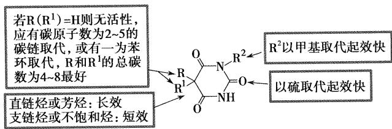
- 【简答题】：巴比妥类药物作用时间长短与什么有关
- 取代基类型不同，起效快慢和作用时间也不同，作用时间长短与5，5位的双取代基在体内代谢过程有关，饱和烷烃和苯基在体内不易代谢，作用时间长，如苯巴比妥
- 与药物解离常数PKa和脂溶性有关，如，2位碳上的氧原子换成硫原子，脂溶性增加，起效快，作用时间短，硫喷妥钠
- 5位的取代基碳原子数之和为4时出现镇静催眠作用，碳原子数之和为7~8时，作用最强，但碳原子数之和超过10时，亲脂性过强，会产生惊厥作用
- 乙内酰脲类
- 乙内酰脲化学结构中的一NH一以其电子等排体— \(\mathrm{CH}_2\) 一替换, 则得到丁二酰亚胺类，乙琥胺(ethosuximide)对癫痫大发作效果均不佳, 常用于小发作和其他类型的发作。是失神性发作的首选药物
- 代表药物：苯妥英钠
- 化学名：5，5-二苯基乙内酰脲钠盐，又名大伦丁钠
- 结构特点：环状酰脲
- 理化性质
- 微有引湿性，吸收二氧化碳，析出白色苯妥英
- 水溶液显碱性反应，常因水解而发生浑浊，需密闭保存
- 水解性：与碱加热可以分解产生二苯基脲基乙酸，最后生成二苯基氨基乙酸，并释放出氨。
- 临床应用：
- 抗惊厥作用强，虽然毒性较大，并有致畸的副作用，但 仍是治疗癫痫大发作和局限性发作的首选药
- 合成：
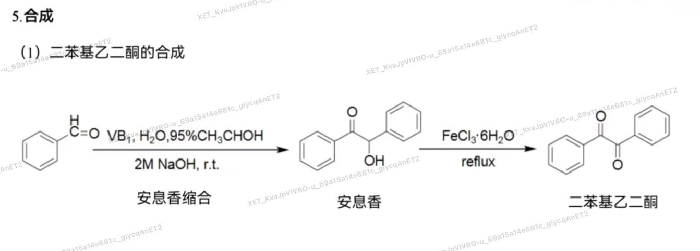
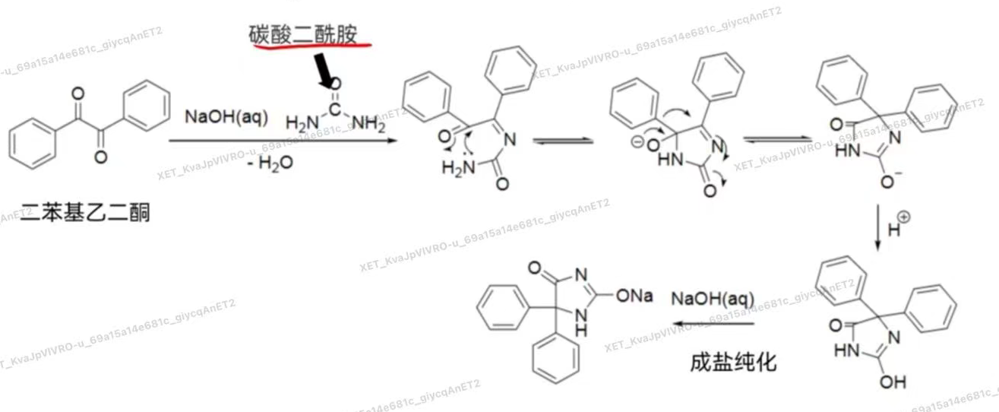
- 苯妥英钠与巴比妥药物的区别
- 苯妥英钠水溶液加入二氯化汞后可生成白色沉淀，在氨试液中不溶
- 巴比妥类药物虽也有汞盐反应，但所得沉淀溶于氨试液中
二苯并氮杂卓类¶
-
卡马西平：
- 化学名：5H-二苯并[b,f]氮杂草-5-甲酰胺,简称CBZ
- 结构特点：两个苯环与氮杂卓环并合而成
- 理化性质：
- 在干燥和室温下比较稳定
- 片剂在潮湿环境中保存时药效降低至原来的三分之一，原因可能是生成本品的二水合物，使片剂表面硬化，导致本品的溶解和吸收困难
- 长时间光照，固体表面由白色变橙色，部分生成二聚体和10,11-环氧化物，故需避光保存。
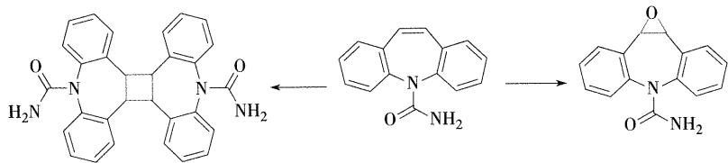
- 合成
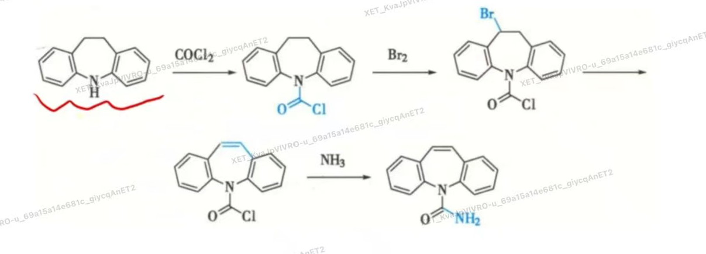
- 肝脏代谢
- 在肝脏代谢，主要产物为10，11-环氧卡马西平，仍具有抗癫痫活性
- 临床应用
- 治疗癫痫大发作和综合性局灶发作，对失神发作无效
-
奥卡西平：
- 为前体药物，在胃肠道内几乎完全吸收，奥卡西平耐受性比卡马西平好，具有不良反应低、毒性小的优点
GABA类似物¶
- 1.普洛加胺
- 化学名：4-[[（4-氯苯基)-（5-氟-2-羟基苯基)甲亚基]氨基]丁酰胺，又名“卤加比“
- 作用靶点：GABA受体激动剂，直接激动GABA受体
- 卤加比作为前药的意义 【简答题】
- 卤加比是一种拟GABA药，是γ-氨基丁酰胺的前药，二苯甲亚基为载体部分与γ-氨基丁酰胺相连，制成前药可使药物亲脂性增加，便于药物透过血脑屏障在中枢神经发挥癫痫作用
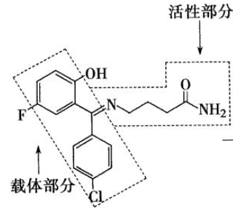
- 卤加比是一种拟GABA药，是γ-氨基丁酰胺的前药，二苯甲亚基为载体部分与γ-氨基丁酰胺相连，制成前药可使药物亲脂性增加，便于药物透过血脑屏障在中枢神经发挥癫痫作用
脂肪酸类¶
- 代表药物：丙戊酸钠
- 临床应用：广谱抗癫痫药，主要适用于单纯或复杂失神发作、全身强直-阵挛发作、肌阵挛发作的治疗，对各型小发作的效果更好，为镇静作用小的代表药物
抗精神病药¶
作用机制： 精神分裂症可能与患者脑内多巴胺过多有关，经典的抗精神病药物是DA受体阻断剂，能阻断中脑-边缘系统及中脑-皮质通路的DA受体，减低DA功能，发挥抗精神病作用
- 1.吩噻嗪类抗精神病药
- 如何由异丙嗪经结构改造得到氯丙嗪 【简答题】
- 异丙嗪吩噻嗪环与侧链氨基间的碳原子数增至3时，抗组胺作用减弱而安定作用增强，在环上再引入氧原子，可能由于脂溶性增加，更易于透过血脑屏障，抗精神病作用增强，得到抗精神病药物氯丙嗪
- 构效关系 【简答题】
- 5位的硫为非必须基团
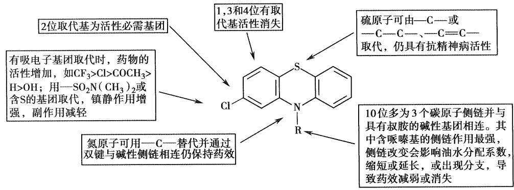
- 5位的硫为非必须基团
- 吩噻嗪类药物与受体的作用方式 （氯丙嗪的氯原子去掉之后为什么失去了抗精神病活性）
- 氯丙嗪的优势构象**顺式构象**中，侧链倾斜于有氯取代的苯环方向，这种优势构象可与多巴胺的优势构象部分重叠，有利于与多巴胺受体的作用，优势构象中侧链倾斜于含氯原子的苯环是该类药物分子抗精神病作用的重要结构特征，失去氯原子则无抗精神病作用，这也是吩噻嗪类药物2位有取代基时活性强的原因
- 代表药物：盐酸氯丙嗪(冬眠灵)
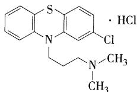
- 理化性质 【选择题考点】
- 母核易被氧化
- 环中的S和N都是良好的电子给予体，易被氧化
- 在空气中放置，渐变为红棕色
- 日光及重金属离子对氧化有催化作用，遇氧化剂则被迅速氧化破坏
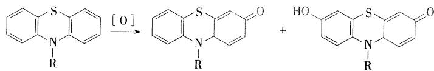
- 遇光分解
- 遇光分解成自由基，自由基与体内一些蛋白质作用时，发生过敏反应
- 口服或者注射吩噻嗪类药物后，部分患者在日光强烈照射下会发生严重的 光化毒过敏反应，皮肤出现红疹 【选择题考点】
- 氧化变质
- 注射液在日光作用下引起的氧化变质反应，可使注射液ph降低，为防止变色，在生产中可加入对氢醌，连二亚硫酸钠、亚硫酸氢钠或**维生素C等抗氧化剂**【选择题考点】
- 显色反应
- 水溶液中加硝酸后可能形成自由基或醌式结构而显红色（吩噻嗪类药物共有的反应）
- 与三氯化铁试液反应，显稳定的红色
- 母核易被氧化
- 体内代谢
- N-氧化、硫原子氧化，苯环的羟基化，侧链脱 N-甲基和侧链的氧化等，氧化产物和葡糖醛酸结合通过肾脏排出。
- 氯丙嗪5位 \(S\) 经氧化后生成亚砜，进一步氧化成砜，两者均为无活性的代谢产物。苯环的氧化以7-羟氯丙嗪活性代谢物为主，羟基氧化物可进一步在体内烷基化，生成相应的甲氧基氯丙嗪。侧链脱 \(N-\) 甲基可生成单脱甲基氯丙嗪及双脱甲基氯丙嗪，这两种代谢产物在体内均可与多巴胺 \(\mathrm{D}_2\) 受体作用，均为活性代谢物。
- 临床应用
- 与多巴胺受体结合，阻断神经递质多巴胺与受体的结合从而发挥作用，本品还可与中枢胆碱受体、肾上腺素受体、组胺受体和5-羟色胺受体结合，产生一定的抑制作用，临床上常用于治疗精神分裂症和躁狂症，大剂量时可应用于镇吐、强化麻醉及人工冬眠（可以降低体温） 冬眠合剂：异丙嗪、氯丙嗪、哌替啶
- 不良反应
- 主要副作用有口干，上腹部不适、乏力、嗜睡、便秘等，具有严重的 锥体外系反应（帕金森综合征），对产生光化毒反应的患者，在服药期间尽量减少户外活动，避免日光照射
- 合成路线
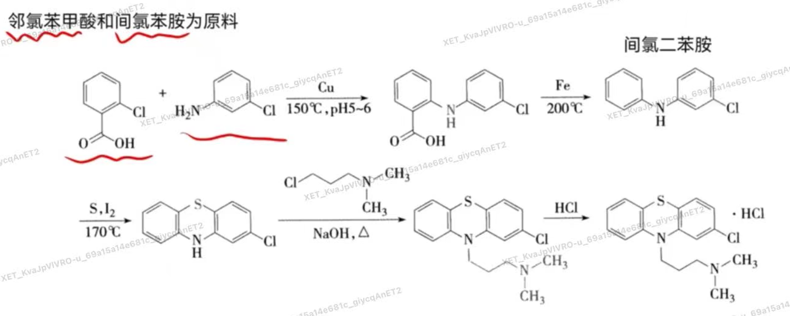
- 结构改造
- 氟奋乃静的前药：氟奋乃静庚酸酯或癸酸酯，肌注可延长作用时间，适用于长期用药及依从性不好的精神分裂症患者
- 如何由异丙嗪经结构改造得到氯丙嗪 【简答题】
- 噻吨类
- 噻吨类的基本结构与吩噻嗪类相似，根据生物电子等排原理，用碳原子替换吩噻嗪母核中的10位氮原子，并通过双键与碱性侧链相连，则形成噻吨类抗精神病药，亦称“硫杂蒽类抗精神病药”【名词解释】
- 代表药物：氯普噻吨
- 丁酰苯类
- 将镇痛药哌替啶的 \(N\cdot\) 甲基用丙酰苯基取代时，不仅具有一定的镇痛作用，而且有很强的抗精神失常作用。将丙基的碳链延长为丁基，可使吗啡样的成瘾性消失，由此发展了有较强抗精神失常作用的丁酰苯类，较吩噻嗪类药物抗精神病作用强，同时还可作为抗焦虑药。
- 代表药物：氟哌啶醇
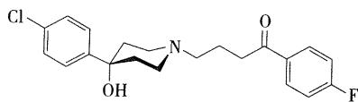
- 理化性质
- 如处方中有乳糖，氟哌啶醇会与乳糖中的杂质5-羟甲基-2-糠醛发生加成反应，影响片剂的稳定性，片剂处方应避免使用乳糖
- 临床应用
- 用于治疗各种慢性精神分裂症合躁狂症
- 副作用：
- 锥体外系反应
- 致畸反应
- 二苯并二氮卓类及其衍生物
- 对吩噻嗪类的噻嗪环进行结构改造，将六元环扩为二苯并二氮草环得到非典型的广谱抗精神病药氯氮平特异性地作用于中脑皮质的多巴胺神经元，具有较好的抗精神病作用
- 氯氮平
- 临床应用

- 抗精神病药，治疗难治性精神分裂症
- 不良反应
- 锥体外系反应轻
- 毒副作用主要由代谢产物引起。在人的肝微粒体、中性粒细胞或骨髓细胞中能产生硫醚的代谢物，导致毒性。故本品在使用时要监测白细胞的数量
- 临床应用
- 苯甲酰胺衍生物类
- 甲氧氯普胺
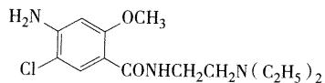
，具有中枢多巴胺拮抗作用，在此基础上，合成了以舒必利为代表的苯甲酰胺类抗精神病药。该类药物可选择性地阻断多巴胺受体，具有作用强且副作用小的优点，可用于精神分裂症和顽固性呕吐的对症治疗。
- 甲氧氯普胺